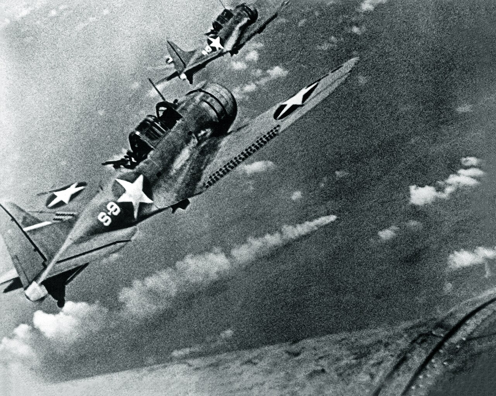

World War II Facilities at Midway
The World War II Facilities at Midway are recognized for the historic role they played in a crucial World War II battle in the Pacific Theater of operations. Midway is a coral atoll six miles in diameter with three islands--Sand, Eastern and Spit. The atoll's name is said to come from its location, midway between San Francisco and Tokyo. Geographically, it is a part of the Hawaiian chain of islands, located 1,140 nautical miles from Oahu; politically, it has never been a part of the state of Hawaii. The United States took formal possession of the unoccupied islands in 1867. The U.S. Navy assumed jurisdiction over Midway in 1903, and remained custodian of the atoll until 1996. The Commercial Pacific Cable Company established a communications station on Sand Island. The cable establishment gained company in 1935 when Pan American Airways' Clippers arrived at Midway and established weekly commercial flights across the Pacific. Pan Am built a small hotel and flight facilities on Sand Island. Because of this commercial enterprise, the U.S. Congress authorized the U.S. Army Corps of Engineers to dredge an entrance channel between the islands, a harbor and seaplane runways in the lagoon as a civil works project in 1938. Later, the U.S. Navy contributed funds and the dredging increased in scope in preparation for a naval air station. In 1939 the Navy established a partnership with several construction firms, which formed Contractors Pacific Naval Air Base for the construction of facilities for two patrol airplane squadrons on Sand Island. The civilian employees also began construction of land runways on Eastern Island. A U.S. Marine detachment assigned to Midway arrived in September 1940. They belonged to the 3rd Defense Battalion and promptly began constructing defenses. In September 1941, the 6th Marine Defense Battalion replaced the 3rd Defense Battalion.
The first Japanese attack on Midway occurred on December 7, 1941, when destroyers successfully shelled naval installations. Then, flush with victory after victory in the Pacific and southeast Asia, Japan prepared in the spring of 1942 to capture the Midway Islands, establish a toehold in the Aleutians, and draw out what was left of the U.S. Pacific Fleet and decisively defeat it. Centered on four aircraft carriers, the Japanese fleet of 162 warships and auxiliaries approached Midway in the first days of June. Due to the breaking of most of Japan's JN 25 Naval codes, Admiral Chester W. Nimitz, Commander in Chief of the Pacific Fleet, learned that Japan was planning a massive raid on Midway in the spring of 1942. Admiral Nimitz ordered his forces, centered on three carriers, to sea to intercept the Japanese. Meanwhile, the Marines, Navy and Army personnel on Midway worked furiously to strengthen their defenses. On June 3, Midway's aircraft spotted a part of the Japanese invasion fleet approaching. Before dawn, on June 4, the Japanese launched 108 aircraft, which attacked both Sand and Eastern islands, inflicting considerable damage. U.S. airplanes took to the air from Midway to counter the attack but the Marine fighters suffered greatly. Earlier, strike aircraft consisting of Army Air Corps bombers, Marine scout bombers and Navy torpedo planes departed Midway to attack the Japanese carriers. These Midway-based attacks were unsuccessful but added to the Japanese confusion and aided in the outcome of the battle. The Japanese, unaware that the American carrier aircraft were fast approaching, decided to launch a second attack upon Midway. The American carrier dive bombers struck while the Japanese were still rearming and the strike force aircraft were still on the carrier’s decks. At the end of the Battle of Midway, all four Japanese carriers, which were involved in the attack on Pearl Harbor, had been sunk, while the United States lost the carrier Yorktown. The Japanese lost 256 of their finest aircraft, and more than 200 of their most experienced pilots and several thousand sailors perished. The Japanese Navy never fully recovered and its expansion into the Pacific had been stopped. American naval power in the Pacific was restored. The American victory at Midway was the turning point of the Pacific campaign of World War II.
